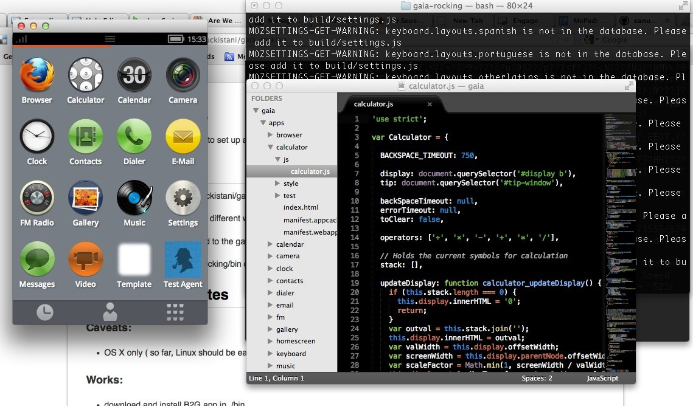
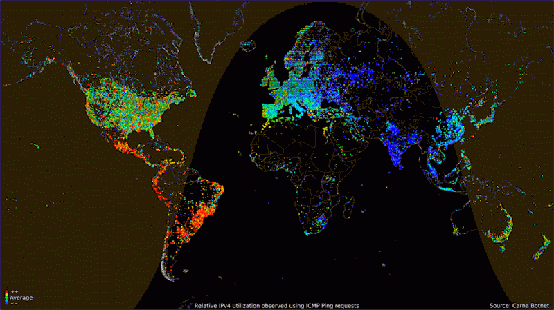

Mozilla, HTML5 & Its Hidden Potential
Abstract:
This talk revolves around the idea, how Internet as a Platform changes the game. How Mozilla changes the desktop and mobile market and how is it different from other platforms, what possibilities it has.
Mozilla, HTML5 & Its Hidden Potential #moztalkunimas
Hilary Ho, at Moztalk UNIMAS — Kuching, 2013
Feel free to tweet, share, plusone & blog
Use hashtag #moztalkunimas
If you can't load social networks smoothly make sure you are using the "RIGHT " browser. (Recommmended Firefox )
Get bored? Take a short walk or makeup at the washroom (makeup applies to both gender)
Questions? Ask anytime & anywhere!!
Hilary Ho, at Moztalk UNIMAS — Kuching, 2013
Hilary Ho, at Moztalk UNIMAS — Kuching, 2013
a global community of people who believe that openness , innovation , and opportunity are key to the continued health of the Internet.
Hilary Ho, at Moztalk UNIMAS — Kuching, 2013
Hilary Ho, at Moztalk UNIMAS — Kuching, 2013
Eat, sleep, Facebook - Its a joke...
Major Products & Services
Hilary Ho, at Moztalk UNIMAS — Kuching, 2013
We’re known for the Firefox Web Browser
Hilary Ho, at Moztalk UNIMAS — Kuching, 2013
Who hasn't use Firefox before?
Browsing Made Easy
Stay in Sync
High Performance
Hardware Acceleration
Do Not Track — Enhanced with Lightbeam
Parental Controls
The Cutting Edge — Graphics, DB & etc
Universal Access — Fonts, Multi-touch Support
Hilary Ho, at Moztalk UNIMAS — Kuching, 2013
Hilary Ho, at Moztalk UNIMAS — Kuching, 2013
Hilary Ho, at Moztalk UNIMAS — Kuching, 2013
APIS : Geolocation, gyroscopes, near-field communications (NFC), cameras, address book, linked data, …Rich media : Audio and video, vectorial images, graphics, animations, high-quality typography, …Cross-device : screens of all sizes, touch, keyboards, voice, vibrations, beeps, …Communications : client-server, real-time, peer-to-peer, sockets, …Society : privacy, security, multilingual, accessibility
Hilary Ho, at Moztalk UNIMAS — Kuching, 2013
Internet traffic is from…
Hilary Ho, at Moztalk UNIMAS — Kuching, 2013
Why Mozilla is making smartphones?
Hint: Mozilla is NOT.
Mozilla is only making a platform the world needs
Hilary Ho, at Moztalk UNIMAS — Kuching, 2013
Everybody loves the HypnoPhone!
Hilary Ho, at Moztalk UNIMAS — Kuching, 2013
Not that "everybody" got one...
Hilary Ho, at Moztalk UNIMAS — Kuching, 2013
reach the emerging markets
leverage Web as the Platform
fight software lock in
fight hardware lockout
take back the web on mobiles
Hilary Ho, at Moztalk UNIMAS — Kuching, 2013
Exposing hardware to the Web
WebTelephony API
Geolocation API
Device Storage API
Contacts API
Vibration API
Alarm API
...and more!
WebAPIs Wiki •
WebAPIs MDN
Hilary Ho, at Moztalk UNIMAS — Kuching, 2013
Hilary Ho, at Moztalk UNIMAS — Kuching, 2013
Hilary Ho, at Moztalk UNIMAS — Kuching, 2013

Hilary Ho, at Moztalk UNIMAS — Kuching, 2013
Apps: teh Interwebz on demand
Hilary Ho, at Moztalk UNIMAS — Kuching, 2013
Decentralized Marketplaces
Search Engine Indexing
Adaptive Search
Firefox OS Marketplace
Hilary Ho, at Moztalk UNIMAS — Kuching, 2013

Hilary Ho, at Moztalk UNIMAS — Kuching, 2013
Hilary Ho, at Moztalk UNIMAS — Kuching, 2013
High Mobility
Easy Collaboration
Cross Devices & Platform
Performance
Gaming
Hilary Ho, at Moztalk UNIMAS — Kuching, 2013
Hilary Ho, at Moztalk UNIMAS — Kuching, 2013
Hilary Ho, at Moztalk UNIMAS — Kuching, 2013
Introduce Unreal Technology.
Hilary Ho, at Moztalk UNIMAS — Kuching, 2013
Hilary Ho, at Moztalk UNIMAS — Kuching, 2013
— LLVM-to-JavaScript compiler emscripten.org
asmjs.org
Hilary Ho, at Moztalk UNIMAS — Kuching, 2013
Hilary Ho, at Moztalk UNIMAS — Kuching, 2013
Yet again...
Hilary Ho
@ho_hilary
hilaryjhho.com is my website.
Hilary Ho, at Moztalk UNIMAS — Kuching, 2013
Full List of Breakout Sessions
Untold Stories of HTML5
Collaboration Using WebRTC, WebSocket & Togetherjs
Contribute to Mozilla Codebase via Distributive Version Control System(DVCS)
Rapid App Prototype using AppMaker
SuMo and Firefox Student Ambassador Recruit
Hilary Ho, at Moztalk UNIMAS — Kuching, 2013
 Hilary Ho, at Moztalk UNIMAS — Kuching, 2013
Hilary Ho, at Moztalk UNIMAS — Kuching, 2013
 Hilary Ho, at Moztalk UNIMAS — Kuching, 2013
Hilary Ho, at Moztalk UNIMAS — Kuching, 2013
 Hilary Ho, at Moztalk UNIMAS — Kuching, 2013
Hilary Ho, at Moztalk UNIMAS — Kuching, 2013

 Hilary Ho, at Moztalk UNIMAS — Kuching, 2013
Hilary Ho, at Moztalk UNIMAS — Kuching, 2013
 Hilary Ho, at Moztalk UNIMAS — Kuching, 2013
Hilary Ho, at Moztalk UNIMAS — Kuching, 2013
 Hilary Ho, at Moztalk UNIMAS — Kuching, 2013
Hilary Ho, at Moztalk UNIMAS — Kuching, 2013
 Hilary Ho, at Moztalk UNIMAS — Kuching, 2013
Hilary Ho, at Moztalk UNIMAS — Kuching, 2013
 Hilary Ho, at Moztalk UNIMAS — Kuching, 2013
Hilary Ho, at Moztalk UNIMAS — Kuching, 2013
 Hilary Ho, at Moztalk UNIMAS — Kuching, 2013
Hilary Ho, at Moztalk UNIMAS — Kuching, 2013

 Hilary Ho, at Moztalk UNIMAS — Kuching, 2013
Hilary Ho, at Moztalk UNIMAS — Kuching, 2013
- Feel free to tweet, share, plusone & blog
- Use hashtag #moztalkunimas
- If you can't load social networks smoothly make sure you are using the "RIGHT" browser. (Recommmended Firefox)
- Get bored? Take a short walk or makeup at the washroom (makeup applies to both gender)
- Questions? Ask anytime & anywhere!!
Hilary Ho, at Moztalk UNIMAS — Kuching, 2013